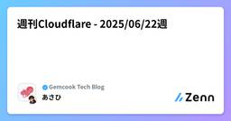

Gemcook Tech Blogのフィード
https://zenn.dev/p/gemcook
「好きな人を喜ばせるプロダクトを作る」をMissionに日々開発しています。モバイル/Webアプリの企画・UI/UX設計・開発・運用までサポート。TypeScript、React、React Native、Next.js、Go、Hono、AWS、Cloudflare、TiDB、B
フィード

週刊Cloudflare - 2025/06/22週 1
1
Gemcook Tech Blogのフィード
こんにちは、あさひです 🙋♂️ 今週の Cloudflare のアップデートをまとめていきます！ この記事の主旨この記事では、前週に Cloudflare のサービスにどんな変更があったかをざっくりと理解してもらい、サービスに興味を持ってもらうことを目的としています。そのため、変更点を網羅することを優先します。 2025/0615 ~ 2025/06/22 の変更 Wrangler 4.20.5パッチアップデートgetPlatformProxy にリモートバインディングサポートを追加wrangler containers apply がオブザーバビリ...
4日前
【Tauri】フロントからRustを実行する invoke API に触れる
Gemcook Tech Blogのフィード
はじめにTauri で開発を行っていても、通常のWeb開発の範囲での機能にとどめる場合は、Rust のコードに触れる機会はほとんどありません。しかし、OS の機能を直接利用するような場面では、Rust 側での実装が必要になります。本記事では、フロントエンドから直接 Rust の処理を呼び出す方法について解説します。 概要Tauri には、フロントエンドから Rust コードを呼び出すための Invoke API が用意されています。本記事では、この API の実装手順を解説します。詳細は公式ドキュメントをご覧ください。https://v2.tauri.app/ja/dev...
6日前
自然言語でUI爆速生成！Google Stitchで会員登録フォームを作ってみた 1
Gemcook Tech Blogのフィード
はじめに2025年5月21日に自然言語で指示を入力すると自動的にWeb UIを生成するツール「Stitch」のベータ版が公開されました。https://x.com/stitchbygoogle/status/1924947794034622614主な特徴について以下になります。モバイルおよびWebアプリ向けの高品質なUIを自動生成し、Figmaへのエクスポートやフロントエンドコードの取得を簡単に行うことができる。AIのモデルはGemini 2.5 Flash、Gemini 2.5 Proを利用している。「自然言語」と「画像」からUI・コードの作成を行うことができる。...
7日前

他言語プログラマがGo言語の基本をキャッチアップする
Gemcook Tech Blogのフィード
2025年6月より、Gemcookという会社でバックエンドエンジニアとして働いています。村中（@wage790）です。これまではRailsを中心に開発してきましたが、Gemcookに入社してからGo言語（Golang）を扱うことになり、現在必死にキャッチアップしています。アウトプットしながらインプットの学習をするのが効果的だと考え、簡単なアプリを作りながらGoの基本文法を習得することにしました。以下の記事に書かれている基礎文法を、1つのアプリ開発を通じて網羅できるように構成しています。https://qiita.com/tfrcm/items/e2a3d7ce7ab8868e37...
10日前
週刊Cloudflare - 2025/06/15週
Gemcook Tech Blogのフィード
こんにちは、あさひです 🙋♂️ 今週の Cloudflare のアップデートをまとめていきます！ この記事の主旨この記事では、前週に Cloudflare のサービスにどんな変更があったかをざっくりと理解してもらい、サービスに興味を持ってもらうことを目的としています。そのため、変更点を網羅することを優先します。 2025/06/08 ~ 2025/06/14 の変更 Wrangler 4.20.0マイナーアップデートWorkers にrun_worker_first による静的ルーティングオプションを追加パッチアップデートwrangler dev...
11日前
5ステップで実装！株価をリアルタイムで取得するMCPサーバーの作り方
Gemcook Tech Blogのフィード
はじめに「AI に株価情報を質問したい」と思ったことはありませんか。最近注目を集めている MCP（Model Context Protocol）を使えば、Claude などの大規模言語モデル（LLM）と外部データソースを連携させることができます。本記事では、MCP サーバーを構築して株価情報をリアルタイムで取得できるシステムを作る方法を解説します。プログラミング経験がある中級者を対象に、MCP の基礎から実際に動作するサーバーの実装までをステップバイステップで紹介します。この記事を読むことで、以下の内容を学ぶことができます。MCP の基本概念と仕組みNode.js と T...
14日前
週刊Cloudflare - 2025/06/08週
Gemcook Tech Blogのフィード
こんにちは、あさひです 🙋♂️ 今週の Cloudflare のアップデートをまとめていきます！ この記事の主旨この記事では、前週に Cloudflare のサービスにどんな変更があったかをざっくりと理解してもらい、サービスに興味を持ってもらうことを目的としています。そのため、変更点を網羅することを優先します。 2025/06/01 ~ 2025/06/07 の変更 Wrangler 4.19.1パッチアップデートpreview alias が常に生成されてしまう不具合を修正 4.19.0マイナーアップデートWrangler において、バージ...
18日前
Cursor Meetup Tokyoを開催してきました！
Gemcook Tech Blogのフィード
Cursor Meetup Tokyo2025 年 6 月 6 日に AIAU（AI エージェントユーザー会）主催のもと Cursor Meetup Tokyo を開催してきました 🎊CursorMeetup 自体は世界各地で行われています。その名の通りですが、Cursor コミュニティが主催する Meetup です、今回は CursorAmbassador の@kinopee_aiさんが AIAU の立ち上げ人ということもあり AIAU 主催で開催となりました！https://lu.ma/cursorcommunityまたステッカーや T シャツを Cursor がサポート...
23日前
週刊Cloudflare - 2025/06/01週
Gemcook Tech Blogのフィード
こんにちは、あさひです 🙋♂️ 今週の Cloudflare のアップデートをまとめていきます！ この記事の主旨この記事では、前週に Cloudflare のサービスにどんな変更があったかをざっくりと理解してもらい、サービスに興味を持ってもらうことを目的としています。そのため、変更点を網羅することを優先します。 2025/05/25 ~ 2025/05/31 の変更 Wrangler 4.18.0マイナーアップデートNode.js 20 未満の環境ではエラーで停止するように変更。Node.js 18.x は 2025 年 4 月 30 日でサポート終了とな...
25日前
bolt.newを使ってwebサイトをリニューアルしてみた！
Gemcook Tech Blogのフィード
bolt.newとはブラウザ上で直接フルスタックアプリケーションの開発、実行、編集、デプロイを可能にする革新的なAI駆動型のWeb開発エージェントです。私が所属しているGemcookにも導入されました。Expoでのアプリ開発やFigmaのデザインを元にコーディング、Supabaseと繋いでフルスタックな開発を行うことができるなど、さまざまな機能を持っています。https://bolt.new/本記事では、bolt.newの具体的な使い方と利用時のポイントについて、Gemcookのwebサイトをゼロからリニューアルすることを想定してご紹介します。経緯として、ある日、社長との会話の中...
1ヶ月前
週刊Cloudflare - 2025/05/25週
Gemcook Tech Blogのフィード
こんにちは、あさひです 🙋♂️ 今週の Cloudflare のアップデートをまとめていきます！ この記事の主旨この記事では、前週に Cloudflare のサービスにどんな変更があったかをざっくりと理解してもらい、サービスに興味を持ってもらうことを目的としています。そのため、変更点を網羅することを優先します。 2025/05/18 ~ 2025/05/24 の変更 Wrangler 4.16.1パッチアップデートwrangler containers delete コマンドが API エラーを正しく処理するよう修正。 4.16.0マイナーアッ...
1ヶ月前
画像生成AIの技術でテキストが爆速生成！Gemini Diffusionの革命
Gemcook Tech Blogのフィード
はじめに「Stable Diffusion って画像生成 AI だよね？それと同じ仕組みがテキスト生成でも使えるの？」そんな疑問を持った方も多いかもしれません。2025 年 5 月 20 日（米国時間）の Google I/O 2025 で、GoogleDeepMind が発表した「Gemini Diffusion」は、Stable Diffusion などの画像生成 AI で使われている「拡散モデル（Diffusion Model）」という仕組みを、テキスト生成に適用した革新的な言語モデルです。Gemini Diffusion のイメージは以下のような感じです。https:...
1ヶ月前
「Claude Code」って何？使い方とセットアップを優しく解説！
Gemcook Tech Blogのフィード
はじめに「なんか最近、『Claude Code』って名前、よく聞くけど…一体何者なんだ？」「便利って聞くけど、どう使えばいいの？」開発の世界に足を踏み入れたばかりのあなた。毎日新しいことを学びながらも、「コード書くの、思ったより時間かかるな…」「うわっ、またエラー！ 怖い…」「ググってもググっても解決しない！ 助けて！」なんて悩んでいませんか？わかります、その気持ち！そんなあなたの隣に、頼れる"相棒"が現れたとしたら？この記事では、噂の AI コーディングアシスタント「Claude Code」について、セットアップから使い方まで、しっかり解説していきます！この記事を読み...
1ヶ月前
TSKaigi 2025 参加レポート #Day2
Gemcook Tech Blogのフィード
2025/5/23(金)〜5/24(土)の二日間で、東京の神田で開催されたTSKaigi2025の参加レポートです。https://2025.tskaigi.org/このレポートではDay2で私が聴講したセッションの軽いまとめ＆感想と、全体の感想を書いていこうと思います！ちなみにDay1の参加レポートはこちら...！！https://zenn.dev/gemcook/articles/bf498212e5ab69TSKaigiって...？TSKaigiとは、一言で言えばTypeScriptコミュニティのお祭りです。世界一のオフラインのTypeScriptカンファレンスで、T...
1ヶ月前
TSKaigi 2025 参加レポート #Day1
Gemcook Tech Blogのフィード
2025/5/23(金)〜5/24(土)の二日間で、東京の神田で開催されるTSKaigi 2025の参加レポートです。私が所属している株式会社Gemcookがスポンサーもしていることもあり、会社をあげてTypeScriptコミュニティを応援しています。https://2025.tskaigi.org/このレポートではDay1で私が聴講したセッションの軽いまとめ＆感想と、全体の感想を書いていこうと思います！（ざっと備忘録的に書いているのであしからず...！！）TSKaigiって...？TSKaigiとは、一言で言えばTypeScriptコミュニティのお祭りです。世界一のオフライ...
1ヶ月前
週刊Cloudflare - 2025/05/18週
Gemcook Tech Blogのフィード
こんにちは、あさひです 🙋♂️ 今週の Cloudflare のアップデートをまとめていきます！ この記事の主旨この記事では、前週に Cloudflare のサービスにどんな変更があったかをざっくりと理解してもらい、サービスに興味を持ってもらうことを目的としています。そのため、変更点を網羅することを優先します。 2025/05/11 ~ 2025/05/17 の変更 Wrangler 4.15.2パッチアップデートpages dev コマンドにおける R2 バケット名のバリデーションを緩和。Analytics Engine のシミュレータ実装を JSR...
1ヶ月前
ありがとうstyled-components : CSS Modules移行テクニック
Gemcook Tech Blogのフィード
はじめに2025年3月にstyled-componentsがメンテナンスモードになりました。https://opencollective.com/styled-components/updates/thank-you新しい技術がどんどん増えていく一方、こういった今まで利用してきたものがメンテナンスモードになっていくのは少し寂しい気持ちになります。そこで本記事では、styled-componentsからCSS Modulesに移行する方法をいくつか実際のコンポーネント例を用いて紹介していきます。 1. 基本的なスタイル styled-componentsButton...
1ヶ月前
OpenAI Codex CLI入門：ターミナルで動くAIコーディングエージェントを徹底解説
Gemcook Tech Blogのフィード
TL;DRCodex CLI とは？ターミナルで動作する OpenAI 製の AI コーディングエージェント（オープンソース）。主な機能ローカル実行、画像入力対応、3 段階の承認モード、安全なサンドボックス実行。使い方npm installと API キー設定で開始。自然言語で指示し、コード生成・編集・実行を支援。 はじめに「Codex」という名前を聞いて、数年前に話題になった API を思い浮かべる方もいるかもしれません。しかし、2025 年に OpenAI から発表された「Codex CLI」は、それとは全く異なる新しいコマンドライ...
1ヶ月前
週刊Cloudflare - 2025/05/11週
Gemcook Tech Blogのフィード
こんにちは、あさひです 🙋♂️ 今週の Cloudflare のアップデートをまとめていきます！ この記事の主旨この記事では、前週に Cloudflare のサービスにどんな変更があったかをざっくりと理解してもらい、サービスに興味を持ってもらうことを目的としています。そのため、変更点を網羅することを優先します。 2025/05/04 ~ 2025/05/11 の変更 Wrangler 4.14.4パッチアップデートunstable_startWorker が構成エラーに対して適切に例外をスローできるよう修正。 4.14.3パッチアップデート...
1ヶ月前
Gemini 2.5 / ChatGPT o3 / Claude 3.7 コスパ徹底比較3選
Gemcook Tech Blogのフィード
はじめに「もし１つだけ契約するとしたら、どの LLM を選びますか？」ChatGPT o3、Gemini 2.5 Pro、Claude 3.7 Sonnet。アップデートが出るたび料金も機能も入り乱れ、私たちエンジニアは“課金ロシアンルーレット”を強いられています。私自身、つい先日、カードの明細を見て「この 4.2 万円、本当に回収できてる？」と青ざめたひとりです。「結局どれに課金するのが一番コスパいいの？・・・」「せっかくお金を払うなら損したくないな・・・」「課金して本当に元取れるのかな？・・・」などなど、この“アップデート大戦争”の最中...
2ヶ月前